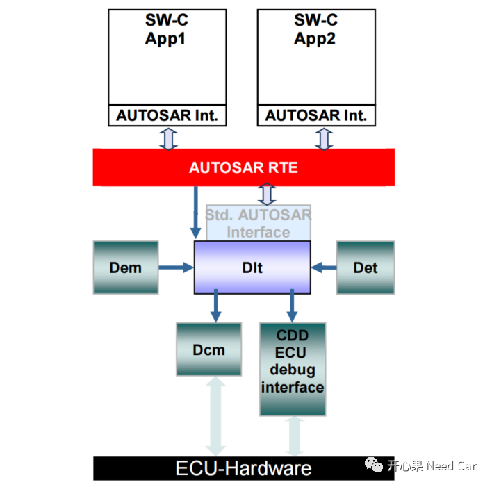
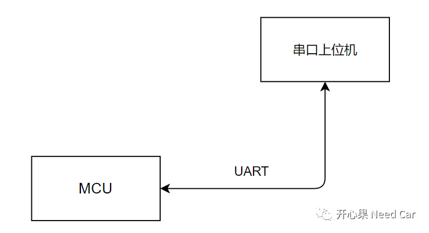
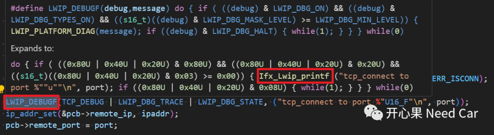
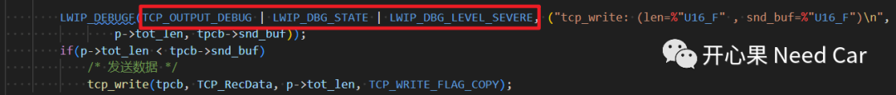
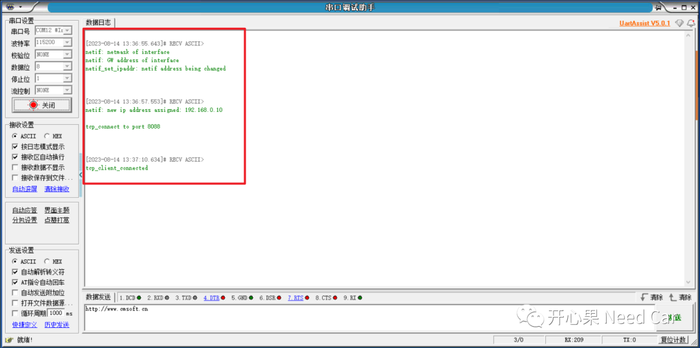
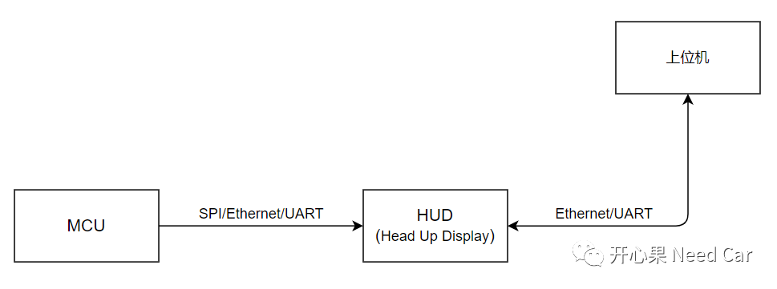

搞MCU软件开发的同学，对于调试，并不陌生。开发阶段，大家使用最多的调试手段：在调试器（eg:lauterbach）中，设置断点（Breakpoint），通过程序进入断点的方式确认问题。但是，此方式毕竟有其局限性，eg：- 非开发人员（eg:测试人员）不能或者没有条件通过此方式进行程序调试；
- 车辆量产后，出现bug时，无法连接调试器，不能获取问题发生时的车辆工况信息
所以，谈到解决bug，我们就需要思考不同阶段的不同调试策略。本文聚焦UART（universal asynchronous receiver transmitter，通用异步收发器）调试系统。关于调试（Debug），在Autosar规范中，也给出了多个调试模块，比如：- DET（Default ErrorTracer）系统，此模块侧重检查BSW（Basic Software）模块开发和运行时的错误，并不能将错误信息以缓存的方式输出。
- DLT（Diagnostic Log and Trace）系统，此模块可以将SW-Cs、BSW、RTE、Det以及Dem记录的信息，以Message的形式通过外部接口输出，如此，即可利用外部的上位机监控程序的运行状态，或者将MCU运行的时时状态存储下来，以便后续bug问题分析。

车辆量产后的问题，相比于DET，DLT更适合，这类似于Linux等系统的日志系统，可以将程序运行的时时状态记录下来，以便于出现问题时，确认问题原因。本文所讨论的UART调试系统类似DLT，但是，相对于DLT，更轻量化，自由度也更大。UART调试系统，故名思意，就是利用串口功能，将log信息输出给上位机，示意如下所示：

（一）为什么要log系统？
如文章开篇提到的问题：车辆量产以后，出现bug问题时，无法使用调试器进行调试，同时，受限于DEM模块记录故障信息的能力，无法通过NVM存储的有限数据确认车辆问题时的运行工况，比如：网络状态、某些模块局部变量状态等。如果能像飞机黑匣子一样，将问题车运行的日志记录下来，通过DTC信息（快照数据、拓展数据）+日志信息即可最大程度的还原车辆故障时工况，进而有效确认问题原因。在MCU上使用调试系统，需要构造一个类似PC端的Printf()接口，也就是重定向功能。利用MCU具有的外设，设计一个输出系统，而UART是最常用的外设。关于UART调试系统，网上资源很多，本文不过多讲解，文末给出一个源码链接。本文分享的UART调试系统来自Lwip，玩Lwip系统的同学应该比较熟悉。使用Lwip调试系统注意点：
在debug.h文件中，定义了一个宏：LWIP_DEBUGF，此宏引用了Ifx_Lwip_printf()接口，如下所示：
而Ifx_Lwip_printf()接口封装了串口发送接口（sendUARTMessage()），如下所示：s8_t Ifx_Lwip_printf(const char *format, ...){#ifdef __LWIP_DEBUG__ char str[MAXCHARS + 4]; s8_t result = ERR_CONN;
va_list args; va_start(args, format); vsnprintf(str, MAXCHARS, format, args); va_end(args); { Ifx_SizeT cnt = 0; while(str[cnt]!=0) cnt++; sendUARTMessage(str, cnt); sendUARTMessage("\r\n", 2); }#endif return result;}
使用调试系统时，需要使能Debug开关，第一个参数需要设置状态和层级，参数配置示意如下：
TCP_OUTPUT_DEBUG | LWIP_DBG_STATE | LWIP_DBG_LEVEL_SEVERE。如下所示：
TCP_DEBUG使能需要在opt.h文件中配置，如下所示：#if !defined TCP_INPUT_DEBUG || defined __DOXYGEN__#define TCP_INPUT_DEBUG LWIP_DBG_ON#endif
（二）串口上位机输出信息
在程序任意需要输出信息的位置，添加LWIP_DEBUGF()语句，输出的调试信息如下所示:

如上的信息流就类似黑匣子信息，可以根据开发人员或者架构意图，预埋一些关键信息，以便于后期的排查。
当然，凡是有利有弊，虽然这样的调试系统，可以很方便的增加调试信息，对开发人员友好（个人很喜欢这样的调试系统），但是，增加这样的调试系统需要消耗软/硬件资源。
硬件：意味着需要增加一个用于调试的串口UART，也可以使用其他外设，eg：Ethernet。log系统需要缓存信息，因此需要消耗一块物理存储空间，对于MCU这种内存资源有限的单片机，一般需要把信息传递给车机或者中控这类资源丰富的控制器。举例：MCU将log信息传递给HUD（Head Up Display，抬头显示器），log信息由HUD存储，之后通过对应总线将信息输出给外部上位机，示意如下：

软件：增加一个调试模块，本身就需要增加对应的软件，消耗部分资源。同时，由于软件模块的增加，也会增加部分CPU负担，如果调试信息过多，会进一步加重CPU负担。所以，这里就需要考虑增加多大的CPU开销是系统所能承受的。
https://github.com/Kaixinguo2021/TC397_Tasking_UART_Logging.git点击下方关注，一起聊聊Autosar/嵌入式，如果需要，联系作者进群，给你更专业的解答